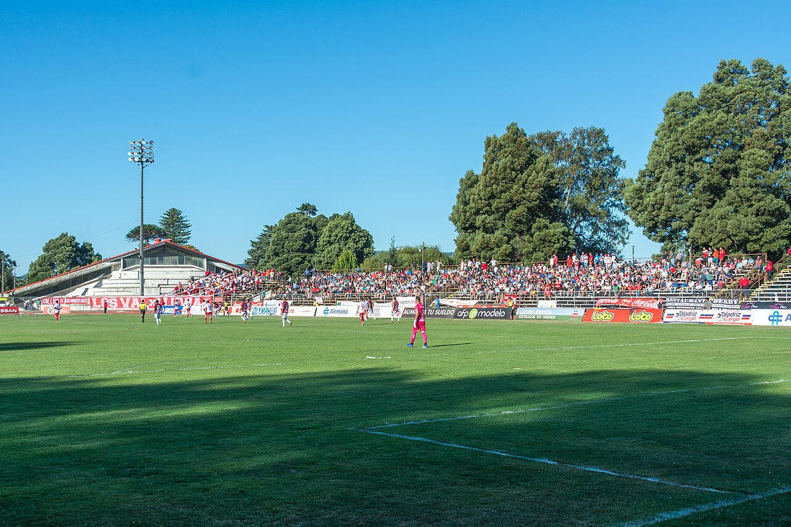

26,1%
de los chilenos juega fútbol o futbolito: el deporte más practicado del país.
Fútbol y futbolito
Esfuerzos explosivos, carreras cortas y 90 minutos (o una pichanga larga) de ida y vuelta. Necesitas energía disponible al pitazo y una buena recuperación para el próximo partido.
- 2–3 h antes
Pasta o arroz con pollo o pescado y verduras cocidas. Evita frituras y salsas pesadas.
- 30–60 min antes
Un plátano o una tostada con mermelada. Algo liviano y rápido de digerir.
- Durante
Agua. En partidos largos, fruta o una bebida isotónica en el entretiempo.
- Después · 1–2 h
Carbohidrato + proteína: arroz con merluza al horno y ensalada, o sándwich integral de pollo o atún con palta.